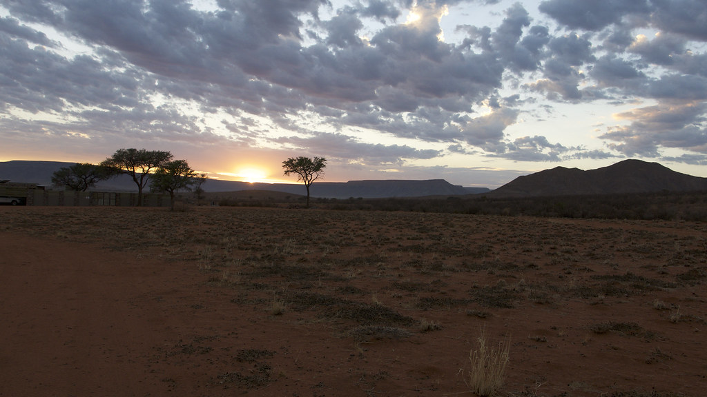

The Dune Suite
A little more privacy, a little more sky. A calm base for long, unhurried days.

SOUTHERN AFRICA / A FICTIONAL DESTINATION
A quieter kind of escape, imagined at the edge of open country. Come for the wide sky. Stay for the space between things.
Enquire about a stay ↘Some places ask you to do less. Leave room for the first light, a long lunch, a walk that finds its own end.
Stay a little / 01
Explore two sample stays, each with an unhurried point of view. All accommodation, amenities and rates are fictional examples; images are regional and hospitality references, not photographs of these rooms.
A little more privacy, a little more sky. A calm base for long, unhurried days.
Room to settle in together, with a shaded deck and a slower start to the morning.
*Indicative sample rates only. Nothing is available to book and prices do not reflect a real property.

The days / 02
Imagine a morning walk while the air is cool, a table that waits without a schedule, and a wide evening sky that makes conversation softer.
Experiences shown here are part of the fictional concept and are not offered or confirmed.A sense of place / 03
Kalahari House is a fictional South African destination concept. The photographs on this page are reference images from other arid-region lodges; they do not depict this imagined property or establish its location.
Plan a sample stay ↘Before you travel / 04
No. This is a demonstration website. The enquiry form shows a sample request only; it does not check availability or confirm a reservation.
No. All room names, capacity, amenities, rates and policies are fictional. A real property would confirm every detail directly.
It has no real address. The concept is imagined in the South African Kalahari region; regional reference photographs are identified as such.
For a real stay, confirm directions, access, seasonal conditions, meals, accessibility, cancellation terms and any activities before travelling.
A first conversation / 05
Share the shape of a sample stay. This form does not query live availability, send messages or reserve accommodation.